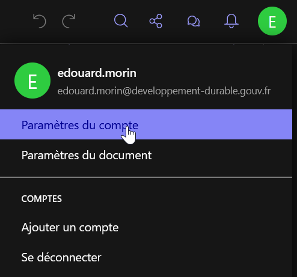
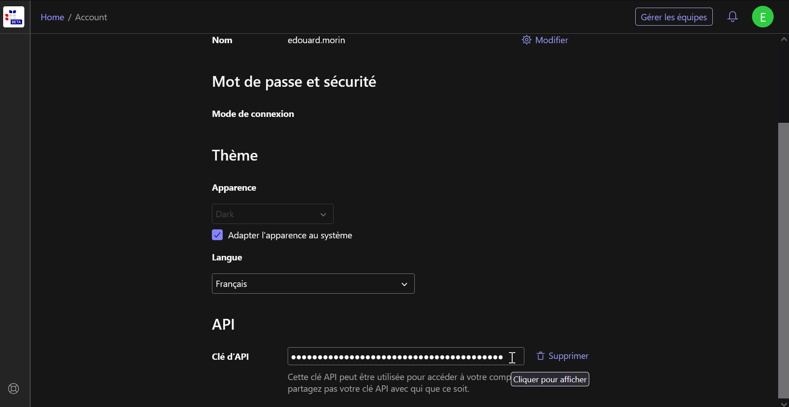
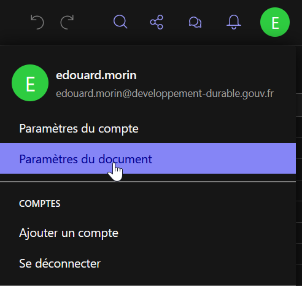
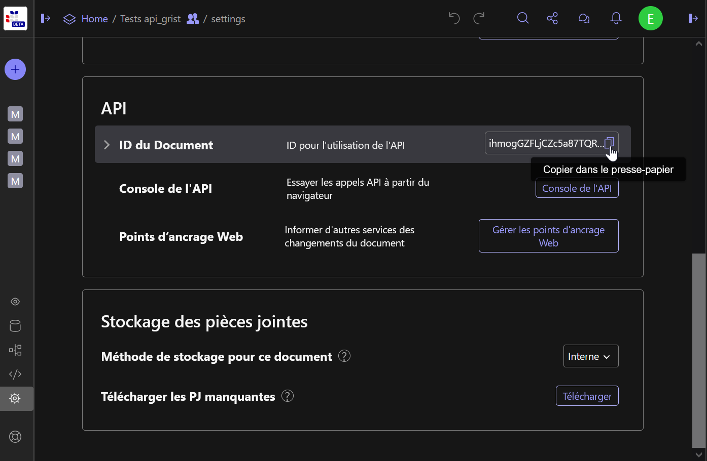

gristapi
Tout utilisateur connecté à https://grist.numerique.gouv.fr dispose d’une clé d’API qui lui permet de lire/écrire dans les documents dans lesquels il a les autorisations (voir https://support.getgrist.com/fr/).
Pour récupérer cette clé, il faut aller dans “Paramètres du compte” depuis l’icone de votre profil.

Puis en bas de la page, vous pouvez copiez votre clé d’API.

Il est conseillé de mettre cette clé en variable d’environnement,
afin qu’elle n’apparaisse pas dans vos scripts R. Dans nos exemples,
cette clé sera injectée via Sys.getenv("GRIST_KEY").
Pour obtenir l’identifiant, il faut en premier se situer sur ce document dans l’interface de Grist, puis de la même manière que précédemment, aller dans “Paramètres du document” depuis l’icone de votre profil.

Puis dans la partie “API” de la page, vous pouvez copiez l’identifiant du document.

Même s’il n’est pas indispensable de mettre cet identifiant en
variable d’environnement, dans nos exemples, cet identifiant sera
injectée via Sys.getenv("GRIST_DOC_TEST").
La première chose à faire pour utiliser gristapi, c’est d’initialiser la connexion à l’api Grist du document (qui lui peut contenir plusieurs feuilles ou tables).
library(gristapi)
api <- grist_api$new(
server = 'https://grist.numerique.gouv.fr',
api_key = Sys.getenv("GRIST_KEY"),
doc_id = Sys.getenv("GRIST_DOC_TEST")
)Si aucun message d’erreur n’apparait, c’est que la connexion à votre
api c’est bien déroulé et que l’objet api peut désormais
être utiliser pour manipuler les données et les feuilles de votre
document depuis R.
Le détail des informations de votre connexion (métadonnées du document) s’affiche en console, simplement en affichant l’objet :
api
#> [1] "-----------------"
#> [1] "grist_api print"
#> [1] "-----------------"
#> [1] "<Document info>"
#> $name
#> [1] "Tests api_grist"
#>
#> $createdAt
#> [1] "2025-07-21T08:37:26.704Z"
#>
#> $updatedAt
#> [1] "2025-07-22T14:14:11.188Z"
#>
...Les principales méthodes de l’objet ainsi créé sont call(),
table_to_json(),
json_to_table().
Pour créer une table, on utilise la fonction add_records
avec l’option create_or_replace=TRUE. On assigne à la table
un identifiant sans espace ni caractères spéciaux
(table_id) et on lui soumet un data.frame à
injecter (record_dicts).
add_records(api,
table_id = "iris",
record_dicts = iris,
create_or_replace = TRUE
)
#> [1] 1 2 3 4 5 6 7 8 9 10 11 12 13 14 15 16 17 18
#> [19] 19 20 21 22 23 24 25 26 27 28 29 30 31 32 33 34 35 36
#> [37] 37 38 39 40 41 42 43 44 45 46 47 48 49 50 51 52 53 54
#> [55] 55 56 57 58 59 60 61 62 63 64 65 66 67 68 69 70 71 72
#> [73] 73 74 75 76 77 78 79 80 81 82 83 84 85 86 87 88 89 90
#> [91] 91 92 93 94 95 96 97 98 99 100 101 102 103 104 105 106 107 108
#> [109] 109 110 111 112 113 114 115 116 117 118 119 120 121 122 123 124 125 126
#> [127] 127 128 129 130 131 132 133 134 135 136 137 138 139 140 141 142 143 144
#> [145] 145 146 147 148 149 150Cette fonction renvoie le vecteur des id (entiers) créés dans la table.
A savoir, toutes les tables (ou feuilles), créées dans Grist, ont un identifiant commençant par une majuscule ! De même, si vos noms de colonnes comportent des “.”, il seront automatiquement remplacés par des “_“.
Il est donc conseillé d’utiliser les fonctions
listtables() et listcolumns() après avoir créé
une table pour s’assurer que le nommage de la structure n’affectera pas
vos traitements ultérieurs.
Pour importer dans R les données d’une table, on utilise la fonction
fetch_table. En l’absence de l’option filters,
on rappatrie toutes les données de la table.
giris <-fetch_table(api, "Iris")
head(giris)
#> # A tibble: 6 × 6
#> id Sepal_Length Sepal_Width Petal_Length Petal_Width Species
#> <int> <dbl> <dbl> <dbl> <dbl> <chr>
#> 1 1 5.1 3.5 1.4 0.2 setosa
#> 2 2 4.9 3 1.4 0.2 setosa
#> 3 3 4.7 3.2 1.3 0.2 setosa
#> 4 4 4.6 3.1 1.5 0.2 setosa
#> 5 5 5 3.6 1.4 0.2 setosa
#> 6 6 5.4 3.9 1.7 0.4 setosaSi on souhaite filtrer avant d’importer les données (utile pour les tables de grande dimension), on doit fournir un filtre rédigé comme l’indique la documentation Grist
gvirginica <- fetch_table(api, "Iris", filters = 'filter={"Species": ["virginica"]}')
head(gvirginica)
#> # A tibble: 6 × 6
#> id Sepal_Length Sepal_Width Petal_Length Petal_Width Species
#> <int> <dbl> <dbl> <dbl> <dbl> <chr>
#> 1 101 6.3 3.3 6 2.5 virginica
#> 2 102 5.8 2.7 5.1 1.9 virginica
#> 3 103 7.1 3 5.9 2.1 virginica
#> 4 104 6.3 2.9 5.6 1.8 virginica
#> 5 105 6.5 3 5.8 2.2 virginica
#> 6 106 7.6 3 6.6 2.1 virginicaIl est également possible de trier les données et d’en limiter le nombre de lignes
gbigpetal <- fetch_table(api, "Iris", filters = 'sort=-Petal_Width&limit=10')
gbigpetal
#> # A tibble: 10 × 6
#> id Sepal_Length Sepal_Width Petal_Length Petal_Width Species
#> <int> <dbl> <dbl> <dbl> <dbl> <chr>
#> 1 101 6.3 3.3 6 2.5 virginica
#> 2 110 7.2 3.6 6.1 2.5 virginica
#> 3 145 6.7 3.3 5.7 2.5 virginica
#> 4 115 5.8 2.8 5.1 2.4 virginica
#> 5 137 6.3 3.4 5.6 2.4 virginica
#> 6 141 6.7 3.1 5.6 2.4 virginica
#> 7 116 6.4 3.2 5.3 2.3 virginica
#> 8 119 7.7 2.6 6.9 2.3 virginica
#> 9 121 6.9 3.2 5.7 2.3 virginica
#> 10 136 7.7 3 6.1 2.3 virginicaPour ajouter des entrée dans une table, on utilise,
à nouveau, la fonction add_records. Le data.frame soumis ne
doit pas contenir de colonne nommée id et sa structure doit
être identique à celle de la table de destination.
records <- data.frame(
Sepal_Length = c(6.5,6.2),
Sepal_Width = c(2.9,3.3),
Petal_Length = c(3.5,3.1),
Petal_Width = c(7.4,6.9),
Species = c("missouriensis","missouriensis")
)
add_records(api, "Iris", records)
#> [1] 151 152Cette fonction renvoie un vecteur d’entier contenant les
id des nouvelles entrées, si l’enregistrement s’est déroulé
correctement (seuls les 500 premiers id sont retournés).
Pour modifier des entrée dans une table, on utilise
la fonction update_records. Le data.frame soumis doit
contenir une colonne nommée id afin de cibler les entrées à
mettre à jour. La structure doit être contenue par celle de la table de
destination.
records <- data.frame(
id = as.integer(c(1,2)),
Sepal_Length = c(5.1,5.0),
Sepal_Width = c(3.5,3.1),
Petal_Length = c(1.5,1.4)
)
update_records(api, "Iris", records)
#> [1] TRUECette fonction renvoie TRUE si l’enregistrement s’est déroulé correctement.
Pour supprimer des entrée dans une table, on utilise
la fonction delete_records. On soumet un vecteur d’entiers
contenant les id des entrées à supprimer.
delete_records(api, "Iris", as.integer(c(3,4)))
#> [1] TRUECette fonction renvoie TRUE si la suppression s’est déroulé correctement.
Pour remplacer toute les données d’une table, il
faut comme à la création de la table, utiliser la fonction
add_records avec l’option
create_or_replace=TRUE. Dans ce cas, on supprime et recrée
une nouvelle table avec le même identifiant, on peut donc modifier la
structure (attention dans ce cas vous perdrez les éventuels filtres,
styles ou relations sauvegargés depuis l’interface Grist).
oldiris <- fetch_table(api, "Iris") |> subset(select = c(-id))
newiris <- data.frame(my_id = 1:nrow(oldiris), oldiris)
add_records(api,
table_id = "Iris",
record_dicts = newiris,
create_or_replace = TRUE
)
#> [1] 1 2 3 4 5 6 7 8 9 10 11 12 13 14 15 16 17 18
#> [19] 19 20 21 22 23 24 25 26 27 28 29 30 31 32 33 34 35 36
#> [37] 37 38 39 40 41 42 43 44 45 46 47 48 49 50 51 52 53 54
#> [55] 55 56 57 58 59 60 61 62 63 64 65 66 67 68 69 70 71 72
#> [73] 73 74 75 76 77 78 79 80 81 82 83 84 85 86 87 88 89 90
#> [91] 91 92 93 94 95 96 97 98 99 100 101 102 103 104 105 106 107 108
#> [109] 109 110 111 112 113 114 115 116 117 118 119 120 121 122 123 124 125 126
#> [127] 127 128 129 130 131 132 133 134 135 136 137 138 139 140 141 142 143 144
#> [145] 145 146 147 148 149 150L’api Grist prévoit une méthode de synchronisation qui en fonction
d’une clé unique, soit ajoute l’entrée, soit met à jour celle existante.
Ainsi, pour synchroniser un data.frame à une table, on
utilise la fonction sync_table. Le data.frame soumis ne
doit pas contenir de colonne nommée id et sa structure doit
être identique à celle de la table de destination. La clé unique peut
être sur un ou plusieurs champs.
new_data <- fetch_table(api, "Iris", filters = 'filter={"Species": ["missouriensis"]}')
new_data$Species <- "japonica"
new_data$my_id[new_data$my_id == 150] <- 151
new_data <- new_data |> subset(select = c(-id))
new_data
#> # A tibble: 2 × 6
#> my_id Sepal_Length Sepal_Width Petal_Length Petal_Width Species
#> <dbl> <dbl> <dbl> <dbl> <dbl> <chr>
#> 1 149 6.5 2.9 3.5 7.4 japonica
#> 2 151 6.2 3.3 3.1 6.9 japonica
sync_table(api, "Iris", new_data, key_cols = c("my_id"))
#> [1] TRUE
tail(fetch_table(api, "Iris"))
#> # A tibble: 6 × 7
#> id my_id Sepal_Length Sepal_Width Petal_Length Petal_Width Species
#> <int> <int> <dbl> <dbl> <dbl> <dbl> <chr>
#> 1 146 146 6.5 3 5.2 2 virginica
#> 2 147 147 6.2 3.4 5.4 2.3 virginica
#> 3 148 148 5.9 3 5.1 1.8 virginica
#> 4 149 149 6.5 2.9 3.5 7.4 japonica
#> 5 150 150 6.2 3.3 3.1 6.9 missouriensis
#> 6 151 151 6.2 3.3 3.1 6.9 japonicaIl est possible de customiser ses requêtes d’exploration dans les
tables en utilisant le “endpoint” sql et la méthode
call de gristapi.
Exemples :
req_sql <- "select * from Iris where Sepal_Length > 5 and Sepal_Width < 4"
api$json_to_table(
api$call(
url = paste0("/sql?q=",URLencode(req_sql)),
type_resp = "string"
),
"records"
)
#> # A tibble: 117 × 8
#> id manualSort my_id Sepal_Length Sepal_Width Petal_Length Petal_Width
#> <int> <int> <int> <dbl> <dbl> <dbl> <dbl>
#> 1 1 1 1 5.1 3.5 1.5 0.2
#> 2 4 4 4 5.4 3.9 1.7 0.4
#> 3 9 9 9 5.4 3.7 1.5 0.2
#> 4 15 15 15 5.4 3.9 1.3 0.4
#> 5 16 16 16 5.1 3.5 1.4 0.3
#> 6 17 17 17 5.7 3.8 1.7 0.3
#> 7 18 18 18 5.1 3.8 1.5 0.3
#> 8 19 19 19 5.4 3.4 1.7 0.2
#> 9 20 20 20 5.1 3.7 1.5 0.4
#> 10 22 22 22 5.1 3.3 1.7 0.5
#> # ℹ 107 more rows
#> # ℹ 1 more variable: Species <chr>